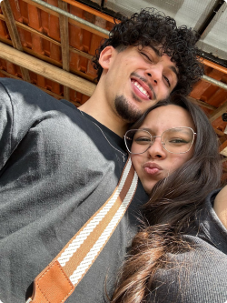

O que dizer sobre o parque, você minha princesa conseguiu tornar deste lugar um dos lugares mais especiais possíveis para mim, nunca esperava que o villa lobos se tornaria o lugar em que eu diria pela primeira vez que te amava, e da mesma forma antes te disse que era apaixonado por você, pela minha princesa a mulher que me transforma em alguém melhor, e no qual deseja viver a vida intensamente a todos os momentos, fazendo viagens e diversas coisas incríveis, mas só ao seu lado, tudo que eu quero é ao seu lado. É totalmente impossível esquecer o sentimento que tive ao te ver deitada em mim sobre o Sol.

O que você me faz sentir e me fez sentir nesses dias, só sinto ao seu lado, é algo tão único que é difícil explicar, mas ao longo de nossa linda vida juntos eu vou tentando, desde aquela cartinha eu me apaixonei profundamente por você, e também foi a primeira vez que eu chorei na sua frente, cada palavra escrita mexeu comigo, teve muito sentimento e ali eu tive uma certeza de que era você. O dia da chuva não foi apenas a gente mas apesar de tudo foi muito gostoso inclusive por que tiramos as fotos mais lindas de todas. Não tem como esquecer cada palavra, cada toque, cada beijo e cada sentimento que eu tive nesse lugar ao seu lado..

.svg)
O sentimento de te dar flores foi algo extremamente único, te dei uma blusa minha e até um esmalte que você queria, mas as flores foi loucura total, eu corri átras em vários lugares, mas no fim deu certo, e te ver surpresa na porta, depois quase chorando e me beijando o tempo todo de tanta felicidade, e passamos uma tarde extremamente gostosa juntos, esse foi o segundo melhor dia de todos, eu quero continuar entregando flores sempre pois é o que meu lírio merece, valeu cada segundo a pena pois a sua felicidade e seu sorriso quando receberam foi a coisa mais linda e radiante de todas, nunca vou me esquecer, que o calor da minha blusa venha te aquecer todas as noites, e os cheiros das flores venham te lembrar do nosso amor, isso é só o ínicio, minha princesa merece muitooo mais.
.svg)
Naquele sábado que eu consegui te ver antes de viajar, foi mó briga, eu tava com muita saudades, seriam 2 semanas sem se ver já, e então assim como sempre eu dei um jeito, e foi um dia tãooo gostoso, a gente dormiu junto e tudo mais, teve outros milhares de outros momentos que eu não disse aqui, como o dia em que te busquei na escola ou quando a gente andou 3km com um cachorro kkkkkk (zeca né), mas no resumo eu quero sempre estar com você viver momentos contigo de todos os tipos, por que é isso que eu sinto, quando estou com você meu amor, eu sinto tudo e mais um pouco.
